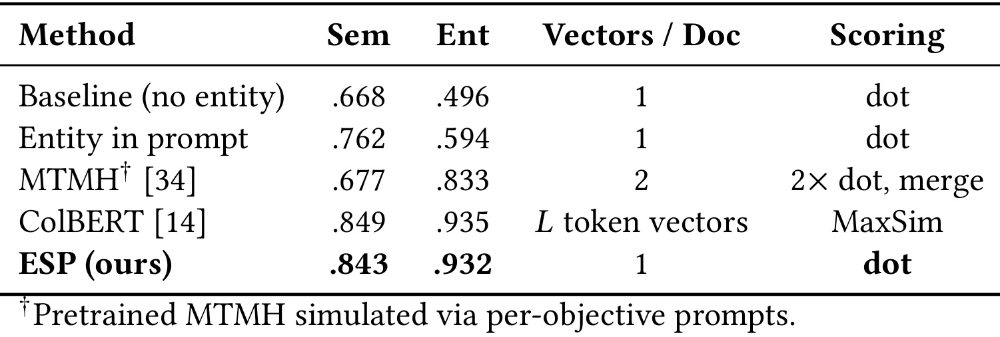
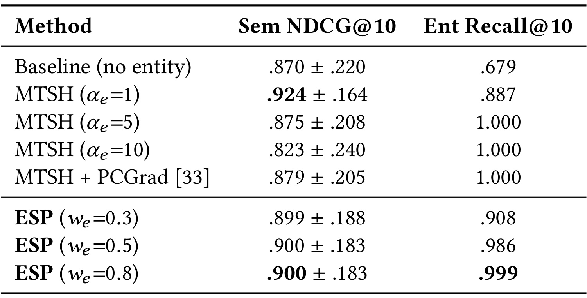
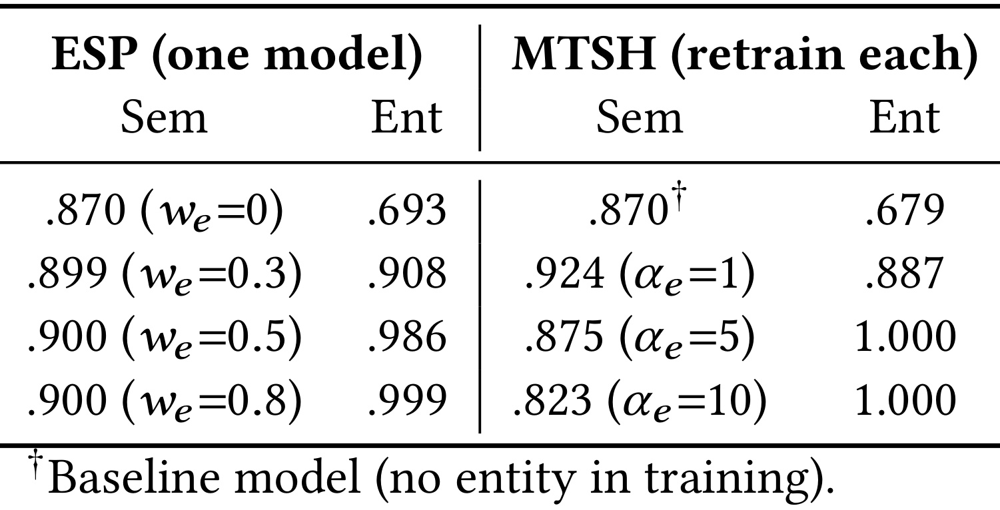
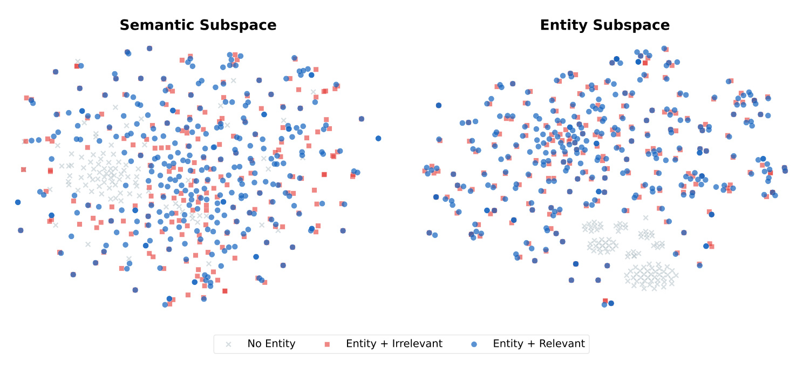
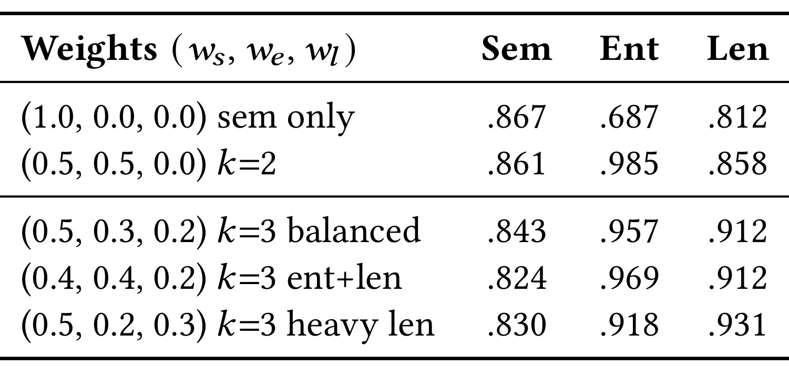
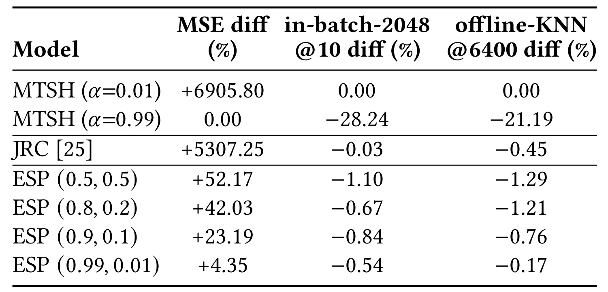
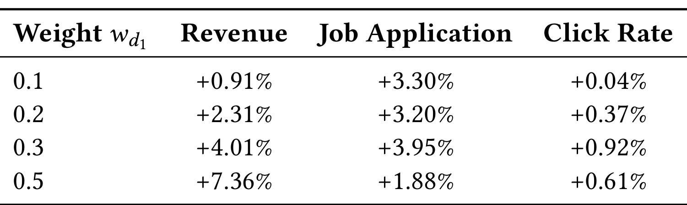

LinkedIn-ESP：让多目标召回在服务时重新选择权衡
论文：Embedding Subspace Partitioning for Dynamic Multi-Objective Retrieval（面向动态多目标召回的嵌入子空间划分）。作者：Shaobo Zhang、Alice Leung、Yunxiang Ren、Ping Liu、Yuchin Juan、Qianqi Shen、Benjamin Le、Jianqiang Shen、Chengming Jiang、Ko-Cheng Wang、Vidya Krishnamurthy、Caleb Johnson、Fedor Borisyuk、Luke Simon、Jingwei Wu、Wenjing Zhang。机构：LinkedIn。公开日期：2026-09-24，arXiv v1；RecSys 2026 论文。原文：arXiv:2609.30601。代码状态：论文称公开基准开源，但本轮未核验到本文官方代码或项目页；不能据此保证可直接复现。阅读范围：完整十页 PDF，包括理论、公开实验、生产结果、讨论与参考文献。记录日期：2026-09-29。
ESP 把一次训练得到的表示拆成可分别计分的目标子空间，然后在服务时改变合成分数的权重。它的主要价值是把一部分业务权衡从重新训练模型转移到请求侧控制，同时以单一拼接索引承接这些目标。公开实验和生产实验使用不同编码器，理论陈述也比可直接验证的工程结论更强，阅读时需要保持这种区分。
当语义匹配、用户互动和收入被压进同一个点积时，目标优先级被固定在训练后的几何结构里；改损失权重通常意味着重新训练，独立召回再合并又增加索引和预算协调成本。ESP 要解决的是让同一套候选表示保留分目标分数，使线上可以重新权衡，而不是承诺所有目标永远同时最优。
1. 背景和问题
工业召回并不只有“找到语义最像的物品”一个目标。LinkedIn 的职位匹配要考虑职位描述是否适合求职者、用户是否会点击或申请，以及商业侧的收入目标。几者之间有相关性，也可能发生冲突：高点击职位未必最符合资历，高出价职位未必带来更好的申请体验。这些冲突如果只交给后续排序处理，可能已经太晚，因为粗召回阶段没有进入候选集的职位无法被精排挽回。因此论文把控制目标权衡的位置前移到第一阶段检索，而且要求这种控制不牺牲工业系统已有的向量检索流程。
双塔模型把请求与文档各编码成一个向量，用点积产生单个相关性分数。它之所以适合大规模服务，是因为文档向量可提前计算，在线请求只需要编码一次，再做向量搜索。这种效率来自强结构限制：每个文档只有一个可用于检索的几何位置，而所有监督信号都要共同塑造这套几何。若收入标签和互动标签希望对同一组文档做不同排序，训练可以找到折中，却不能自动给服务侧留下重新选择折中的接口。损失中设置了多个权重，不意味着推理得到的那个点积还能被拆回多个目标的贡献。
作者称之为 no-knob problem，即服务时缺少可以调整目标偏好的旋钮。这个问题和模型容量不足相互关联但并不等价。即使一个很大的单向量模型能很好地拟合某个固定综合目标，服务接口依然只暴露一个分数；业务临时改变收入与互动的优先级时，无法在不改变文档表示的情况下知道每个目标原本给出了多少分。反过来，模型提供多个分数以后也不保证每个分数都足够准确，编码容量、标签质量和共享训练冲突仍会约束效果。ESP 的工程贡献首先应放在“暴露可组合的目标分数”上理解，再讨论它是否改善训练结果。
最直接的替代方案是为每个目标各训练一套召回器、各维护一份索引，再把候选合并。这样目标隔离很清晰，但是基础设施、向量更新、容量分配和候选去重都变得复杂。特别是两路分别截断再合并时，某个文档可能在任一单目标排序里都没有进入预算，却在综合分数下本该排名很高；合并阶段已经看不到它。ESP 选择先对统一文档集合计算综合分数，再取候选，从而避免把综合权衡推迟到每路候选截断之后。当然，这需要检索引擎能高效计算动态加权的分数，不能把模型接口和检索基础设施分开评估。
另一条路线是在单向量训练中引入多任务损失，或者用 PCGrad 处理梯度冲突。这能改变模型怎样学习，但最终服务的还是一个已经混合了目标的向量。论文的公开实验专门把单头多任务模型与 ESP 放在相近实体召回水平上比较，以检验独立输出是否保住更多语义质量。这里不能把“梯度手术没有完全追平”解释为优化方法永远无效，也不能把某组实验上的差距升级成所有单向量模型的数学上限。模型规模、训练预算、负例构造及评价目标都会影响这种比较，论文自身只覆盖若干具体条件。
公开基准把语义相关性与实体匹配分开，是一种便于控制冲突的设计。比如查询是关于某个人的演讲，一个包含同名人物但只讨论生日的段落在实体层面正确，在信息需求层面却不正确。负例特意保留同一实体，迫使模型不能仅靠字符串识别通过测试。这同时带来一个边界：实体身份可能只需要很少维度，而完整语义需要更多维度，因此两个目标的难度并不对称。该基准适合验证“把低复杂度辅助信号单独存放”的价值，尚不足以代表两个同样复杂的语义目标长期竞争的全部工业情况。
还需要区分“子空间”一词的三种含义。输出坐标被分成不重叠区块，是直接由拼接操作实现的结构性质；Transformer 的不同输入片段无法相互注意，是注意力遮罩保证的信息路径性质；共享编码器参数在多任务训练中不受其他任务影响，则是更强的优化性质。前两者并不会自动推出第三者。DNN 的几个投影头仍然依赖同一个干线，Transformer 的各段也使用相同权重，某一损失改变共享参数后，其他目标的表示仍可能变化。把这些性质混写成“彻底消除全部干扰”，会高估论文实际提供的隔离范围。
最后，ESP 不是免费的索引升级。本文采用 GPU 穷举近邻检索，对统一索引进行扫描，让请求侧权重直接进入打分；作者把这看作实现动态权衡的硬件与模型共同设计。对于已经使用倒排聚类或残差量化的系统，改变目标权重会改变哪些方向重要，近似索引的召回质量需要重新评估。论文关于 ANN 的强措辞应读作其选定部署设计的限制与动机，不能表述成一切近似检索算法在数学上都无法支持加权拼接向量。实务上应测量精度、吞吐、尾延迟、显存以及索引更新成本，才能判断迁移是否合算。
这也决定了论文适用的业务节奏。若产品每次修改收入权重都需要经历模型训练、向量全量重刷和索引切换，服务侧调权可以显著缩短实验迭代；若业务从来只使用固定目标，或者候选全集足够小、每个目标各自召回已经便宜，则额外分区的收益可能没有那么大。目标分数必须在上线时被保留，而不能在导出模型或向量后再次压成不可拆解的一项，否则原来的无旋钮问题会回来。模型结构、向量格式、在线算子和实验配置因此需要共同支持这一接口。
在阅读生产结果时，还应注意任务阶段不同。召回希望尽量保住潜在可用职位，精排希望在较小集合里精细比较，最终申请行为又受职位展示、投递流程和市场供需影响。收入头蒸馏精排模型的信号，可以帮助召回提前感知商业价值，却也可能把精排的偏差带到更上游。因此论文线上多指标同时提升是一项有价值的系统观察，不能自动分解成每个子空间各自带来的净贡献；要做这种归因，还需要保持其他链路不变的消融或分阶段实验。
2. 方法
2.1 几何动机与条件性容量分配
论文先将每个目标表示成请求到文档的相关性矩阵，并用奇异值所定义的有效子空间讨论容量。直觉是：如果几个目标依赖几乎相同的文档方向，共享表示较容易复用维度；如果目标依赖不同方向，就需要保留更多独立信息。其冲突定义使用两个有效右奇异子空间的投影重合度：
符号解释：$V_i^\delta$ 是目标 $i$ 的有效右奇异子空间，$r_i$ 是它的维数，$P_V$ 为正交投影，$\|\cdot\|_F$ 是 Frobenius 范数。投影重合越多，定义的冲突越小。这个量并不是训练梯度夹角，也不等于任意采样排行榜的相关系数。作者后续使用 Kendall 排序相关系数的补数作为数量级代理，但明确说代理不是严格等式，因此不能从实测相关性直接推出确定的几何容量损失。
理论需要保留审慎边界。 原文定理三从单一得分矩阵同时逼近多个目标出发，定理四再描述分块构造。但若两个目标矩阵本来相距很远，一个固定矩阵同时接近二者就有更基本的必要条件；保留各目标的独立打分矩阵，和要求同一个矩阵同时逼近所有目标，是不同的问题。直接由三角不等式可知：
符号解释：$R_i,R_j$ 是两个相关性目标，$S$ 是固定得分矩阵，$\delta$ 为原文相对误差容许值。此式是阅读原理论时的必要性检查，并非论文新增算法。若目标不满足此条件，单纯增加维度也无法让同一个 $S$ 达到该误差要求；ESP 实际可以保留不同 $S_i$ 再按需求组合，这个可用工程构造不需要接受原文所有强理论表述。原文对称冲突的简化还借助共享核心加相互正交私有补空间的结构，不能仅靠两两冲突数值相同就不加条件地推出。
当目标具有相近谱衰减形状时，作者提出按有效秩比例分配维度：
符号解释：$d$ 为总维度预算，$d_i^*$ 为第 $i$ 个目标的理想分配，$k$ 为目标数，$r_i$ 为有效秩。这是均匀谱衰减假设下均衡各目标保留比例的规则，实际还涉及取整、最小维度和有效秩估计。论文实验中实体在三十二维已经饱和，而语义需要大得多的维度，这支持不平均分配的动机；它不意味着任何业务辅助目标都可以压成三十二维，更不意味着可以只通过实体数量的对数就准确预测实数嵌入所需维数。
2.2 可重加权的分块评分与多任务损失
ESP 为每个目标生成独立归一化子向量，然后拼接存储。请求与文档之间不计算跨块点积，仅把对应块的相似度加权求和，核心评分公式为：
符号解释：$q,d$ 分别是请求和文档，$e_i^q,e_i^d$ 为第 $i$ 个目标的单位子向量，$w_i$ 是服务时权重。将 $w_i$ 乘到请求对应区块后，仍可对拼接文档向量执行一次点积。因此索引可保持不变，请求只改变加权表示；如果业务目标本身换了含义或需要全新标签，则不能期待调权代替重新训练。归一化把各块余弦限制在共同数值范围，但不同任务分数的分布、校准和业务边际价值仍可能不同，数值权重不能直接理解成收益占比。排名目标使用对比损失，正样本的同目标点积与批内候选竞争：
符号解释：$N$ 是参与平均的查询数，$B$ 是候选批次大小，$d_n^+$ 为匹配正例，$\tau$ 为温度，$\mathcal L_i$ 是目标 $i$ 的损失。原文也允许其他目标使用均方误差或二元交叉熵，因此分块机制不要求所有监督都是相同类型。生产收入目标来自精排教师的点击概率与出价，适配程度来自人工标注微调过的语言模型软标签；两者的误差和偏差会被召回模型学习，独立输出并不替代对教师质量和反事实采样的验证。总损失与服务分数具有不同权重，必须在实现与解读中分清：
符号解释：$\alpha_i$ 为训练损失权重，$e_j$ 为另一输出区块，$\theta$ 为共享编码器参数。中间的零导数表示当前计算图中某个损失不直接读取别的输出块，最后的梯度和说明干线仍然接收多个任务的更新。训练权重影响表示如何学成，服务权重决定学成后如何使用分数。 原文将输出结构与容量联系起来，但不能据此断言训练权重只影响收敛速度而绝不会影响最终泛化；有限模型、有限训练和共享参数会让优化轨迹成为重要因素。
2.3 EOS 分段编码与生产投影头
Transformer 实现利用预训练模型已有的结束标记，不新增词表项。输入先放实体属性，再放正文，每段以 EOS 收尾；属性必须是查询与文档两侧相同类型的字段，例如都为人名或职位名。因果注意力下，前面的实体 EOS 无法看到后面的正文，因此天然减少正文对实体摘要的影响；但后面的正文 EOS 能看到前面的实体，单靠顺序并非双向隔离。作者再使用片段感知因果遮罩，把每段注意力限制在自己的片段，并在每段起点重置位置编号。前者控制信息路径，后者用于保持独立片段的位置处理一致，二者目的不同。对纯 RoPE 来说整体位置平移的效果还取决于模型实现，因此原文关于绝对位置的强解释宜连同实测修正效果理解。从各段 EOS 隐状态取出子向量，按分配维度截断后分别归一化：
符号解释：$h_i$ 为第 $i$ 个 EOS 的隐藏状态，$H$ 为原隐藏宽度，$d_i$ 为保留维数，分号表示拼接。这里截断不同 EOS 的隐藏状态并不等价于从一个已经混合的向量事后切块，因为每个隐藏状态的输入信息路径不同。作者报告实体优先排序已带来约零点九七的同实体余弦，相比之下遮罩进一步改善实体区分；具体数值来自不同消融条件，不能把它们连写成同一条严格单变量曲线。定制四维遮罩使用 SDPA，部署前还需检查所用注意力内核和片段打包策略是否支持。DNN 没有这种 EOS 序列结构，于是在共享干线后增加每目标的投影头：
符号解释：$f,g$ 表示请求侧和文档侧编码器，$h_i$ 是目标专用投影映射，此处沿用原文的简记，实际还需与归一化步骤结合。LinkedIn 生产系统用互动、收入和适配程度三个目标，公开 Transformer 的遮罩优化并不是线上业务增益的直接实现来源。系统层使用 GPU 全量扫描统一拼接索引，再按加权分数取近邻；这是避免维护每目标索引的具体方案，成本取决于候选规模与硬件。论文没有在这十页中给出生产穷举召回完整延迟与成本曲线，而是引用另一篇系统论文，因此不能把后文的单文档编码毫秒数用作线上检索的时延证明。
3. 实验结果
3.1 预训练比较：实体信息与表示结构各贡献多少
公开实验基于 MS MARCO 构建约三万九千段落语料，并让每种方法对完整语料排名。基准总计一千九百九十三个唯一查询，训练样本一万三千九百五十一条，评估三元组两千零九十三条，对应一千三百五十九个评估查询；评估负例中百分之七十二是包含同一实体的困难负例，其余是无实体的容易负例。语义指标为 NDCG@10，实体指标衡量前十条中实体匹配情况。基准的实体抽取要求多词实体在相关段落中原样出现，并过滤通用短语，因此它是有明确信号设计的诊断实验，不能直接当作全分布自然语言检索。

表一使用零点六十亿参数预训练编码器。无实体输入时语义和实体指标分别为零点六六八、零点四九六；将实体直接写进提示后上升到零点七六二、零点五九四。这首先说明可用实体信息本身就能提升质量，不能把 ESP 与无实体基线的全部差距都归因于空间划分。ESP 达到零点八四三、零点九三二，相比实体提示方案进一步提高两个指标，才是其结构设计值得关注的部分。ColBERT 在同表达到零点八四九、零点九三五，略高于 ESP，所以准确结论是 ESP 接近更昂贵的词元交互方法，而不是所有指标绝对第一。
表中“每文档一个向量”是指拼接后作为单条索引记录，不代表内部只有一个目标表示；相反 ColBERT 保存与文本长度相关的词元向量，还需要 MaxSim 交互。这个区别对于系统预算很重要，但单凭向量条数仍不能完整估算显存，必须结合维度、精度和文档长度。MTMH 的预训练结果只有零点六七七语义和零点八三三实体，脚注明确它是通过每目标提示模拟多头，再各取一半候选合并；它没有训练好的任务投影头。因此表一反驳的是这个具体模拟与合并策略，不能推广为训练过的所有多头方法都不如 ESP。这个限制也解释了为什么要继续看同预算训练后的结果，而不能仅凭预训练表格定论。
从读取顺序看，应先比较同样输入实体的单向量提示与分段模型，再比较不同存储形式，而不要按最高数字逐行跳读。前一比较问的是表示结构是否保留了有用信号，后一比较问的是质量能否以更紧凑的索引实现。只有把输入信息与存储预算这两个轴拆开，表一才能成为可复现的架构证据。
3.2 训练后的匹配操作点与调权曲线

表二固定零点六十亿参数编码器、一个训练轮次、相同语料和评估查询。MTSH 的实体损失权重从一增到五再到十时，实体指标从零点八八七达到一点零，但语义从零点九二四降到零点八七五、零点八二三。这个趋势说明在该训练设置中继续强调实体会损伤语义，且实体饱和之后仍继续损伤。PCGrad 在实体一点零时达到零点八七九，略缓解损失，却没有恢复低实体权重时的语义质量。ESP 在服务实体权重零点八时达到零点九零零语义、零点九九九实体，于近似匹配实体水平上比 MTSH 权重五高零点零二五，即二点五个百分点。
原文报告这个与 MTSH 的语义差异具有小于零点零零一的显著性，基于一千三百五十九个查询自举的百分之九十五置信区间为一点六到三点五个百分点。表格的加减项是查询间标准差，不是多次训练随机种子的误差条，不能用它证明模型训练稳定性。与 PCGrad 比较，差距是二点一个百分点；与 MTSH 权重一比较，ESP 的语义反而较低，但实体更高。因此“匹配实体目标后语义更好”比“ESP 全面对所有基线占优”更忠实。训练后的 ColBERT 被作者因目标部署存储预算排除，这意味着表二没有回答在无限存储预算下哪种架构最优，只回答了作者所关注的紧凑召回设定。
另一个复现要点是评价单位为查询，不能把两千多条评估三元组当作独立查询重复计权。同一查询可能有多个困难负例，若显著性抽样单位用错，会让置信区间虚假缩窄。论文按一千三百五十九个查询自举的描述，给出了比简单比较表中均值更可靠的差异解释。

表三把“得到一个高分点”和“能方便地改变点”分开。左边几个 ESP 操作点来自同一个训练后模型，只改实体权重；右边 MTSH 的不同损失权重需要分别训练。ESP 从不使用实体时的零点八七零语义、零点六九三实体，转到权重零点三时的零点八九九、零点九零八，说明实体信号在这一段也帮助了语义排序。继续增到零点五和零点八时，语义基本停在零点九，而实体继续升到零点九八六和零点九九九。这种平坦区域对业务很有用：可以在相近语义质量下提高实体命中，而不必每次修改训练任务再走完整发布流程。
但表格不是一个对每个可能权重都穷尽验证的完整帕累托最优性证明。左边少量离散点展示了一条可操作曲线，右边也只有有限训练配置，不能据此断言模型覆盖整个真实最优边界。正文额外报告实体权重达到一点零时语义降至零点五八三，这直接说明取舍没有消失。独立语义分数虽然没有被服务权重改写，但合成分数可以完全忽视它，于是最后候选质量仍然下降。读者应把“独立分数不被混合训练输出直接吞掉”和“最终排名不会受调权伤害”区分开。对于部署，最值得复用的是先画出本业务的可接受权重区间，再把区间当作受约束的控制接口，而不是把任意权重变化都视为无风险。
线上控制还需考虑指标对权重未必单调。即使某目标的得分线性增加，前若干名的截断会导致集合离散变化，下游指标又可能依赖候选之间的竞争。因此这里展示的平稳区间是实验发现，应通过扫描确认并监测漂移，而不应当作任何数据分布都满足的数学性质。
3.3 可视化与第三目标验证

图一左右分别为语义和实体子空间的二维可视化，灰色叉号表示无实体，红色方块表示有实体但不相关，蓝色圆点表示有实体且相关。实体空间右图中，无实体点与有实体点更容易分离，同时相关与不相关的有实体点仍会混在一起；这恰好符合实体通道应该完成的任务：判断实体身份，而不承担完整的信息需求判断。左图则反映语义表示中实体存在与正文内容交织的情况。若误以为实体空间应该单独把红蓝两类完全分开，就混淆了两个子任务，也会误判分区目标。
二维降维图只能提供解释性证据，距离与簇形状会受降维算法及参数影响，不能据此读出有效秩、泛化误差或严格正交程度。正文的维度扫描比这张图更接近容量论点：在隐藏宽度一千零二十四时，实体只保留三十二维便达到作者设定下的完全实体准确率，而语义需要约七百五十维以上才维持较高质量。这个实体准确率也不应与主表的全语料 Entity Recall@10 无条件互换，因为指标与测试用途并不相同。图一和维度扫描共同支持“当前实体任务相对简单，分配小块就有价值”，尚不能证明收入、适配或多样性等所有辅助目标都同样低复杂度。若实体空间需识别近重复商品型号或细粒度属性，所需维度可能明显增加。
可视化中的红蓝交叠还提醒我们，实体信号单独承担最终检索会保留大量错误答案。困难负例的设计正是把这类混淆保留在数据中，因此实体头的成功需要语义头共同补足。把两个分数分开观察，可以诊断失败究竟来自实体抽取错误，还是同实体候选之间的语义区分不足。

表四在预训练模型上增加一个人为构造的长度偏好：把文本分成少于三十词、三十至八十词、大于八十词三个桶，查询偏好固定为中等长度。这个设置的意义是验证接口能从两个目标扩展到三个，不能把“中等长度最有信息”当作普遍语言学事实。两目标权重为零点五、零点五、零时，语义、实体、长度指标分别是零点八六一、零点九八五、零点八五八；换成三目标均衡配置零点五、零点三、零点二后，它们变为零点八四三、零点九五七、零点九一二。长度匹配提高五点四个百分点，同时语义损失一点八、实体损失二点八个百分点，是清晰可见的交换。
进一步将长度权重调到零点三后，长度指标达到零点九三一，但实体降至零点九一八，语义为零点八三零。增加目标因此不等于免费新增能力，而是允许使用者显式选择代价。表中第三目标是低熵的长度桶，仍然无法模拟三个复杂语义目标的容量竞争；它证明机制可以扩展，却没有测到扩展的极限。表四属于预训练实验，也不能和表二训练后零点九零零语义直接做退化对照。正文另在 NFCorpus、SciFact、FiQA 做无实体前缀的单目标检查，报告相对基线变化不超过零点三个百分点；当属性分数对所有文档相同时，它只为综合分数加常数，不改变排名。这提供退化为单目标的合理性，但同样没有覆盖所有缺失属性和错误标注场景。
若改成用户各自不同的长度偏好，查询侧属性会随请求变化，仍可使用已有文档长度表示，但需要重新验证各偏好组的结果。当前统一偏好只展示一个方向的控制能力，没有覆盖用户异质性、偏好缺失和多个属性同时错标的场景，这些都是扩展实验时应明确补上的变量。
3.4 生产离线共训与线上业务变化
生产实现为 DNN 三投影头。互动训练使用三十天的一亿三千五百万点击、一千二百万申请、三百万收藏，并结合批内负例与随机容易负例；收入监督以按点击付费场景的点击概率乘出价估计，点击概率来自高精度精排教师和反事实数据；适配监督来自用两万五千条人工标注微调的语言模型，再将软标签阈值化进行二元训练。这里存在教师偏差、历史曝光偏差和标签阈值选择等额外变量，分区只改变表示与打分结构，不自动解决数据因果偏差。

表五最容易误读的地方是三个数值列使用不同参照。收入均方误差差值以收入优先的 MTSH 权重零点九九为零点，两个召回差值却以互动优先的 MTSH 权重零点零一为零点。互动优先模型的收入误差高出百分之六千九百零五点八，收入优先模型则损失百分之二十八点二四的批内召回、百分之二十一点一九的离线全量近邻召回。它们说明单头固定折中在这组生产数据上代价很大，但不能把跨列差值简单相加为一个总损失，也不能将百分比误差直接换成绝对预测误差。
ESP 的收入与互动权重为零点九九、零点零一时，收入误差相对收入基线仍高百分之四点三五，批内召回相对互动基线低百分之零点五四，离线召回低百分之零点一七。这是一种接近两端优势的折中，而不是每个指标严格超过两个专用基线。作者用二十八点二四除以零点五四得到约五十倍的召回损失缩小，这个倍数描述“损失幅度的比值”，不是召回率提升五十倍，更不是收入提升五十倍。JRC 的召回变化很小，但收入误差仍很高，说明不同单向量折中的表现差异很大。加入第三个适配头后，作者报告留出标注上的 AUC 为零点九三八，互动和收入近似持平；这提供三目标可用性的证据，仍缺少更完整的误差区间与多轮训练对照。
表五的批内召回是在两千零四十八候选里看前十，全量近邻列则看前六千四百，两列关注的候选难度与截断位置不同。批内损失很小不能替代全库验证，全库离线结果也不能直接预测线上申请率。作者同时报告两者有助于检查改善是否仅限训练采样分布，但仍需线上实验完成最后验证。

表六在线上保持同一个训练模型，改变服务时收入权重，其互补权重分给互动。收入权重零点一时收入、申请、点击率分别提高百分之零点九一、三点三零、零点零四；权重零点二时对应百分之二点三一、三点二零、零点三七。最终选择的零点三操作点为收入提高百分之四点零一、申请提高百分之三点九五、点击率提高百分之零点九二。若改为零点五，收入提高百分之七点三六，但申请提升回落到百分之一点八八，点击率提升为百分之零点六一。后者不是整体更优，只是在收入维度取得更高点，因此不能把最高收入与另一个权重的最高申请提升拼成一组结果。
作者称这些来自七天线上实验且达到小于零点零五的显著性，但表中没有逐格置信区间、各实验桶样本量和多重检验说明，因此本笔记保留“论文报告”的归属。简介和结论同时提到不适配率下降百分之八点九五，正文明确这是零点三配置上线爬坡后的分析，衡量下游过滤及人工审核认定的不适合职位比例；它不在表六同一组七天随机实验列里，不能把三项收入申请点击结果与它拼成同口径的四指标因果结论。系统服务七千万以上周活用户也不等于本次实验样本量。完整生产成本没有在表六提供，线上有效性不能替代延迟与硬件成本的核算。
效率方面，论文讨论了公开零点六十亿 Transformer 在 H200 上的编码：仅因果版本相对普通编码额外开销小于百分之零点一，短序列情况下使用 SDPA 的遮罩版本每文档十九点六毫秒，对照 FlashAttention 为二十二点四毫秒。这大约是百分之十二的单文档编码变化，与内核选择、短序列形状密切相关；它既不是生产 DNN 编码延迟，也不是扫描全部职位索引的端到端检索延迟。对拟迁移系统而言，应该分别测试查询编码、向量扫描、取前若干、跨设备通信及下游候选数量，而不能直接使用这两个毫秒数估算总吞吐。
4. 总结
ESP 最有价值的贡献，是把目标偏好从一个训练时被压缩进表示的隐含决定，变成服务端可以显式设置的组合规则。独立目标分数、统一拼接存储、请求侧调权和 GPU 全量检索构成一个完整方案。对于已经具备穷举向量检索基础设施、并且辅助目标与主目标容量需求差异较大的业务，它值得作为召回层多目标控制的实验起点。公开实体检索和生产职位匹配分别提供结构诊断与真实业务证据，两者相互补充，但不应在模型架构、数据规模与时延口径上混在一起。
证据最强的结论有明确范围：在该 MS MARCO 衍生基准中，ESP 能以接近饱和的实体召回保持比高实体权重单头模型更高的语义 NDCG；在作者生产系统中，同一训练模型可以用几个服务权重形成不同的收入与申请权衡。证据较弱的结论则包括所有目标都完全消除干扰、完整帕累托最优边界已被覆盖、以及所有 ANN 都无法承载这种结构。前者受共享干线训练与有限容量影响，中者只展示有限操作点，后者更多是本文系统选择的解释。把这些边界说清楚不会削弱已观察的业务价值，反而让后续复现有更准确的目标。
理论部分尤其需要独立复核。单一矩阵同时逼近冲突目标，与多个独立矩阵分别逼近目标再动态组合，在可实现性上不是同一个命题。有效子空间近似包含也需要谱间隙等条件，不能从小重构误差无条件跳到精确包含。对称冲突下共享核心加私有正交空间是很有启发的特殊构造，却未必覆盖所有满足同样两两冲突的几何。因而本笔记把容量分析视为设计动机与条件性模型，不把定理三、四当作已经由本轮独立确认的普适定理。实际评分公式与输出结构可以单独实现、单独测试，不必等理论所有细节澄清之后才评价工程效果。
若在自己的召回系统中复现，应首先确认原始标签的质量与目标可分性：互动样本是否有曝光偏差，收入教师是否存在出价分布漂移，适配模型是否把少数群体岗位误判为低质量。然后在相同总维度和同等训练预算下，对比单头、分头与候选后合并，并画出权重扫描曲线。尤其需要加入两个同样高复杂度目标，检查公开实验里的维度优势是否仍成立。验证指标应分目标保留，避免用一个综合分数把真正的交换关系又隐藏起来；服务调权虽然容易，进入线上之前仍需重新检查候选覆盖与下游反馈。
系统评估可以沿着本文暴露的接口展开：保存可复用的分目标向量，在离线完整候选集合上获得精确基准，然后测量不同权重下现有近似索引的召回误差与 GPU 扫描成本。若使用独立索引后合并，需明确每路候选预算及交集处理，否则模型差异会被候选策略掩盖。若采用全量扫描，需报告不同索引规模和请求并发下的尾延迟、显存与成本，不能只给编码速度。最后，业务权重并不天然可解释为收益贡献，分目标分数校准和可接受区间仍需验证。本文也把更好的分数校准、更高熵目标、共享干线梯度流和高效片段遮罩列为未来工作，这些正是把概念验证推进为稳健系统时最需要继续补齐的部分。